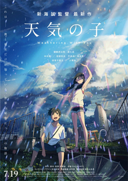

Weathering with You (Japanese: 天気の子, Hepburn: Tenki no Ko, lit. "Child of Weather") is a 2019 Japanese animated romantic fantasy film produced by CoMix Wave Films and released by Toho. It depicts a high school boy who runs away from his rural home to Tokyo and befriends an orphan girl who has the ability to control the weather.
The film was commissioned in 2018, written and directed by Makoto Shinkai. It features the voices of Kotaro Daigo and Nana Mori, with animation direction by Atsushi Tamura, character design by Masayoshi Tanaka, and its orchestral score and soundtrack composed by Radwimps; the latter two previously collaborated with Shinkai on Your Name (2016). A light novel of the same name, also written by Shinkai, was published a day prior the film's premiere, while a manga adaptation was serialized in Afternoon on July 25, 2019.
Weathering with You was theatrically released in conventional, IMAX, and 4DX theaters in Japan on July 19, 2019, and was released in the United States on January 20, 2020. It received positive reviews, with praise for the animation, narrative, music, and emotional weight, although some reviewers were divided over perceived similarities to Your Name. The film grossed ¥21.11 billion (US$193.65 million) worldwide, becoming the highest grossing Japanese film of 2019, and the sixth highest-grossing anime film of all time, unadjusted for inflation.
The film won a number of awards, including being selected as the Japanese entry for Best International Feature Film at the 92nd Academy Awards. It received four Annie Award nominations, including for Best Independent Animated Feature, tying Spirited Away and Millennium Actress (both 2001) for the most nominations for an anime film at the Annies (until it was surpassed by Hosoda's Belle (2021), with five nominations).